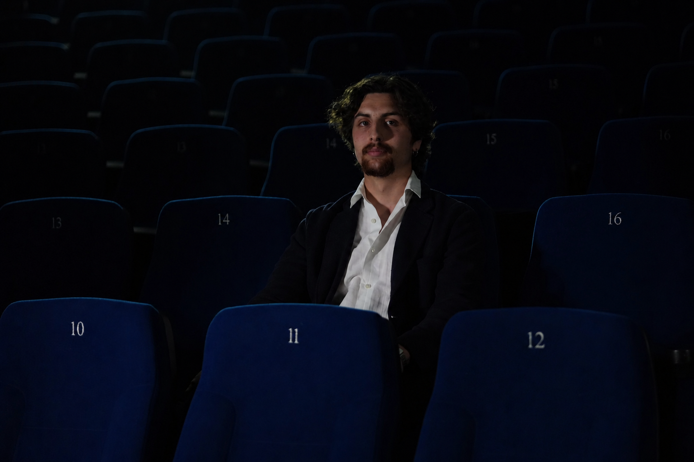

Direction • Curation artistique • Production
QUI SOMMES-NOUS?
PoPaCi Pictures est une société de production audiovisuelle basée au Tessin, fondée le 28 janvier 2026, spécialisée dans le développement et la production de courts et longs métrages.
Notre activité va au-delà de la production cinématographique et s’étend à la promotion de la culture audiovisuelle à travers l’organisation d’événements et la conception d’installations. Notre travail s’inscrit dans un champ de recherche plus large qui interroge le rapport entre image, technologie et société contemporaine, avec une attention particulière aux implications de l’intelligence artificielle.
Le Merge Film Festival naît comme lieu de rencontre et d’échange, devenant le prolongement naturel du projet PoPaCi sur le territoire cantonal. Le festival se configure comme une plateforme culturelle où cinéma et intelligence artificielle sont mis en relation pour interroger le spectateur sur les processus créatifs et la manière dont ils redéfinissent l’imaginaire et l’expérience du réel.
Équipe organisatrice
Le projet est développé par une équipe de jeunes auteurs et professionnelsactifs entre cinéma et arts visuels, avec des compétences intégrant recherche
artistique, production et organisation.
Équipe du festival
Dario Cirrincione
CEO, directeur artistique

Réalisateur, auteur, sélectionneur audiovisuel et producteur suisse, Dario Cirrincione occupe le rôle de Directeur général et Directeur artistique du Merge Film Festival.
Il est cofondateur de la société indépendante PoPaCi Pictures SNC, à travers laquelle il développe des projets cinématographiques, artistiques et des initiatives culturelles entre la Suisse et le contexte international.
Il a réalisé Present, un court métrage qui explore et hybride différents formats expressifs, incluant l’utilisation de l’intelligence artificielle. L’œuvre a été sélectionnée dans plusieurs festivals internationaux dont le World AI Film Festival.
Équipe du festival
Francesco Poloni
COO, directeur artistique

Réalisateur, auteur, sélectionneur audiovisuel et producteur suisse, Francesco Poloni occupe le rôle de Directeur opérationnel et Directeur artistique du Merge Film Festival.
Il est cofondateur de la société indépendante PoPaCi Pictures SNC, à travers laquelle il développe des projets cinématographiques, artistiques et des initiatives culturelles entre la Suisse et le contexte international.
Il a réalisé le court métrage Tusen Toner qui a été sélectionné dans la section Pardi di domani du Locarno Film Festival 2025, où il a remporté le Pardino d’argento SRG SSR, l’une des principales récompenses dédiées aux nouveaux auteurs émergents.
Équipe du festival
Liam Pagnamenta
CFO

Producteur suisse et sélectionneur audiovisuel, Liam Pagnamenta occupe le rôle de CFO du Merge Film Festival.
Il est cofondateur de la société indépendante PoPaCi Pictures SNC, à travers laquelle il développe des projets cinématographiques, artistiques et des initiatives culturelles entre la Suisse et le contexte international.
Il est actuellement producteur d’un court métrage entièrement réalisé avec l’intelligence artificielle qui explore l’IA et ses impacts sur la dimension humaine, questionnant la manière dont elle redéfinit la perception, l’identité et la relation avec le réel.
Équipe du festival
Gabriele Crasci
CCO

Monteur, réalisateur, auteur audiovisuel, Gabriele Crasci occupe le rôle de Directeur de la communication du Merge Film Festival.
Dans cette fonction, il coordonne et oriente stratégiquement l’ensemble du département communication, en définissant les lignes opérationnelles et les objectifs, et en supervisant les activités du bureau de presse, de l’équipe éditoriale et des domaines marketing, identité visuelle et branding du festival.